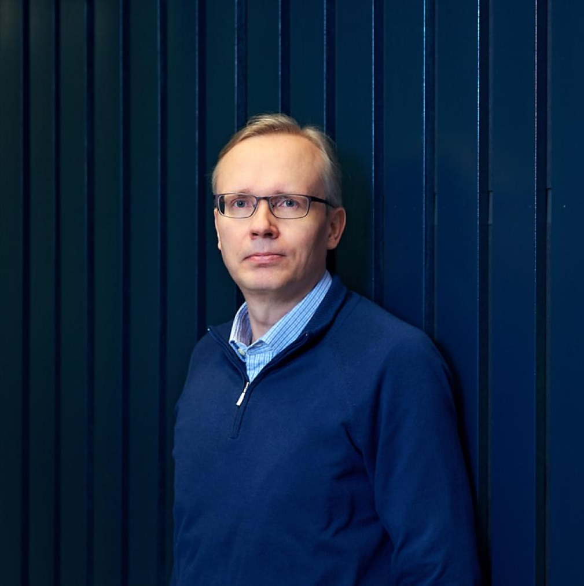

Prof.Janne Heikkilä received his Doctor of Science in Technology degree in Information Engineering from the University of Oulu in 1998. Currently, he is a professor of computer vision and digital video processing in the Faculty of Information Technology and Electrical Engineering at the University of Oulu, and the head of the Degree Programme in Computer Science and Engineering. He has served as an area chair and a member of program and organizing committees of several international conferences. He is a senior editor of Journal of Electronic Imaging, and an associate editor of IET Computer Vision and Electronic Letters on Computer Vision and Image Processing, a guest editor of a special issue in Multimedia Tools and Applications, a member of the governing board of the International Association for Pattern Recognition (IAPR), and a senior member of the IEEE. During 2006-2009 he was the president of the Pattern Recognition Society of Finland. He has been the principal investigator in numerous research projects funded by Academy of Finland, National Agency for Technology and Innovation (Tekes) and enterprises. His research interests include computer vision, machine learning, digital image and video processing, and biomedical image analysis. He has supervised 9 completed doctoral dissertations and published more than 160 peer reviewed scientific articles in international journals and conferences.